Опять понедельник, и опять что-то интересное у нас на столе! На этот раз — интеллектуальное зарядное устройство для Ni-Mh аккумуляторов типоразмера AAA и AA.
Почему интеллектуальное? В отличие от обычных зарядных устройств, которые продаются задешево китайцами или входят в комплекты типа «10 дешевых аккумуляторов и дешевая зарядка за 2000 рублей», и заряжают «капельным» способом, это зарядное устройство имеет в себе контроллер, в который заложены программы быстрой зарядки аккумуляторов, и некоторые другие фишки — вроде определения емкости и «тренировки» аккумуляторов для восстановления емкости.
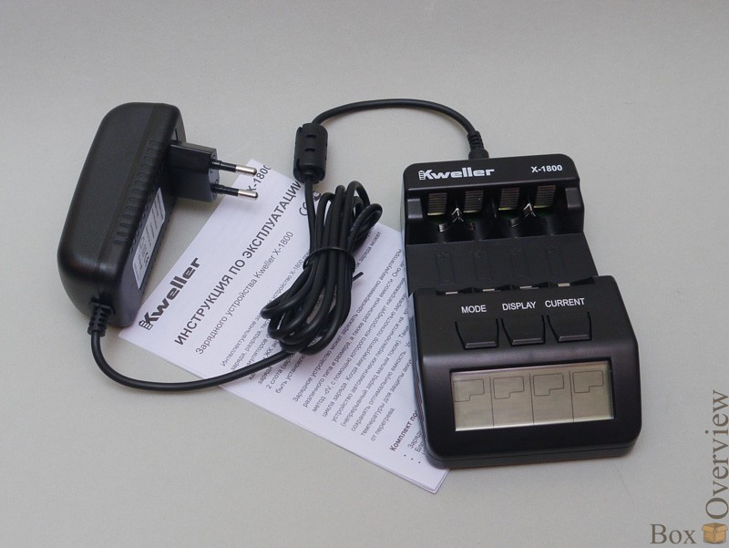
О терминологии
Ni-Cd, никель-кадмиевый аккумулятор. Аккумулятор, катодом в котором выступает Ni(OH)2, анодом Cd(OH)2, электролитом — KOH. Отличаются большим количеством циклов заряд-разряд, и возможностью хранения в разряженном виде.
Ni-MH, Никель-металл-гидридный аккумулятор. Катод — оксид никеля(NiO), анод — сплав Лантан-Никель-Кобальт, электролит — такой же как и в Ni-Cd.
99% аккумуляторов, продающихся в магазинах формфакторов АА или ААА — Ni-MH. Обусловлено это более привлекательными для потребителя качествами — менее заметный эффект памяти, большая емкость. Правда, вместе с этими характеристиками в комплекте идет и быстрый саморазряд (когда через некоторое время неиспользованные аккумуляторы приходится заряжать заново).
LSD Ni-MH — Ni-MH с низким саморазрядом. Несмотря на интригующую аббревиатуру в названии, она всего лишь сокращение от Low Self-Discharge :) Несмотря на это, они обладают еще несколькими преимуществами — бОльшими токами разряда, возможностью работать при низких температурах, увеличенным количеством рабочих циклов.
О умном и глупом заряде
Заряжать никелевые аккумуляторы можно разными способами. Кстати, следует учитывать что зарядка, предназначенная для Ni-MH, сможет зарядить и Ni-Cd, но не наоборот. Если вам удастся найти в закромах зарядку, специально предназначенную для никель-кадмиевых аккумуляторов, не стоит пытаться заряжать ей Ni-MH — может плохо кончиться. Но я уже лет 5, наверное, не видел таких зарядных устройств.
Так вот, о способах заряда. Самый простой — капельный, или малым током.
В этом режиме аккумулятор заряжается фиксированным током, составляющим 1/10C, или 0.1С. Как мы помним из терминологии, С — это численное значение емкости аккумулятора, а значит, даже теоретически, зарядка должна длиться никак не менее 10 часов. На практике, никто не обладает 100% КПД, а значит, время заряда увеличивается как минимум до 15 часов. В реальности, это время будет еще больше, так как зарядки «тупые», и способны только контролировать ток. Соответственно, нельзя заранее узнать, какой аккумулятор будет заряжаться — 600mAh или 2700mAh. Для первого нужный ток составит 60mA, а для второго — 270mA.
Процессы, протекающие в во время заряда таковы, что как раз ток в 0.1С аккумулятор после набора полной емкости способен переваривать без последствий в виде взрывов и огня — просто превращая в тепло, которое без последствий уносится потоками воздуха. А если этот ток превысить, аккумулятор начнет нагреваться слишком сильно, и вполне может рвануть.
Вы понимаете, к чему я клоню? Нельзя заряжать аккумулятор в 600mAh током 270mA, а вот аккумулятор в 2700mAh током в 60mA — вполне. Впоследствии этого, все зарядки такого типа ограничивают ток заряда в 60-100mA. И если для аккумулятора в 600mAh время полного заряда и составит рекомендуемые 15 часов, то для более емкого аккумулятора в 2700mAh вам потребуется уже около полутора суток минимум. В общем, все понятно, и пользоваться таким зарядным устройством могут только те, кто использует аккумуляторы в пультах для телевизоров.
Заряд средним током с контролем температуры.
В этом режиме аккумулятор заряжается уже токами от 1/3C до 1/2C, которые позволяют зарядить уже за приемлемое время — от 5 часов. При заряде такими токами аккумулятор начинает нагреваться после окончания заряда, что может привести к его взрыву. Поэтому, в таких зарядках рядом с аккумулятором находится температурный датчик, который отслеживает резкое повышение температуры, и останавливает заряд. Если зарядка еще чуть «умнее», она сначала разряжает аккумулятор для избавления от эффекта памяти, а потом начинает заряжать его. Некоторые модели еще считают время от начала заряда, что позволяет косвенно судить о исправности аккумулятора — если зарядка закончилась на гораздо меньшее время (час или полтора), то аккумулятор неисправен, о чем зарядка сигнализирует.
Заряд высокими токами с контролем -ΔV и температуры
Самая быстрая технология заряда. Аккумулятор заряжается высокими токами (от 1C до 2С), позволяя заряжать аккумулятор за час или два.
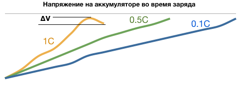
Основной принцип такой технологии заключается в том, что до окончания заряда напряжение всегда растет, а сразу после полного заряда — снижается. Ненамного, на десятки или даже единицы милливольт. Контроллер в зарядном устройстве постоянно мониторит напряжение на аккумуляторе и после скачка напряжения вниз — снижает ток заряда примерно до 10mA — для компенсации саморазряда — чтобы аккумуляторы всегда были готовы, даже если их оставят в зарядке на день.
Существует опасность не заметить этот момент, и серьезно перегреть аккумулятор на таких токах, поэтому во все зарядные устройство дополнительно встроена защита по температуре — термодатчики на каждый аккумулятор, которые временно выключают процесс заряда, если аккумулятор сильно нагрелся.
Как правило, производители не ограничиваются только таким режимом — если уж встраивать контроллер, то на него можно повесить еще несколько функций — контроль тока, для определения реальной емкости аккумулятора, функцию тренировки — когда аккумулятор несколько раз заряжается и разряжается для компенсации эффекта памяти, и другие функции.
О самой зарядке
Коробка из плотного картона:
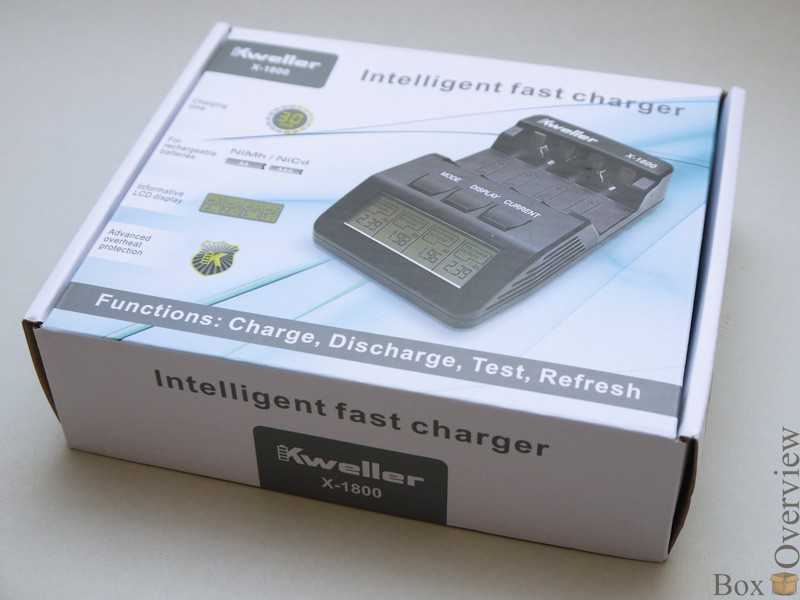
Надписи на трех языках. Внутри коробки можно обнаружить блок питания, само зарядное устройство, и руководство. Все комплектующие имеют собственную упаковку, а зарядное устройство — даже личные пупырышки на пакетике. Блок питания на 3 вольта и аж 4 ампера. Руководство, и само зарядное устройство. На обратной стороне зарядки — описание, модель, значки. Остальное пространство покрыто рядами вентиляционных отверстий. С боков ничего интересного нет. Все органы управления сосредоточены на передней панели, там же гнезда под аккумуляторы.
На задней стороне — разъем блока питания.
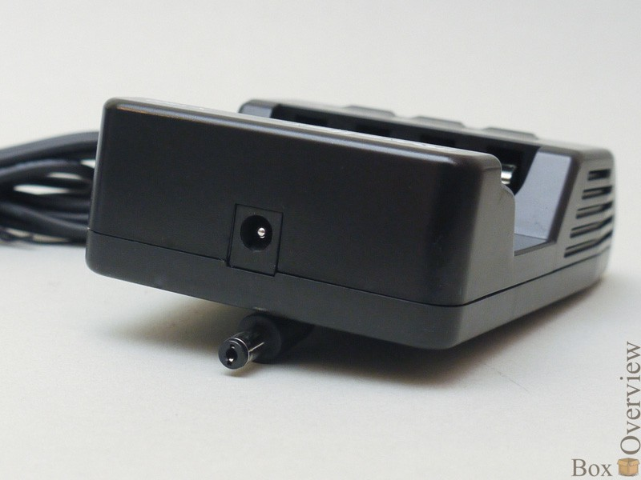
Управление осуществляется тремя кнопками — Mode, Display, Current. Первая отвечает за выбор режимов, вторая — за отображение на экране параметров, а третья устанавливает ток заряда.
Внутренности:
Как обычно, полюбопытствуем, что же находится внутри. Выкручиваем 4 винта по периметру, после чего снимаем заднюю крышку. Взору предстает плата, так же прикрепленная 4 винтами:
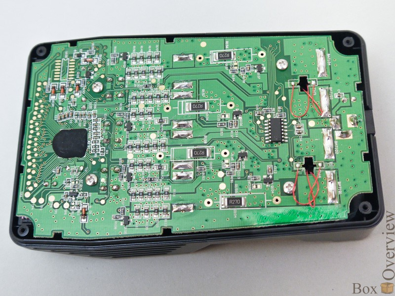
Но вытащить плату, только выкрутив винты не удастся. Еще надо отпаять в 4 точках, отмеченных стрелками провода термодатчиков. Следует отметить, что они не просто прижимаются, а намертво приклеены (скорее даже вклеены) в металлические пластинки теплопроводным герметиком. Датчиков два — каждый отвечает за два аккумулятора.
Именно к этим пластинкам прижимаются аккумуляторы — для лучшего контроля температуры.
Вот и плата:
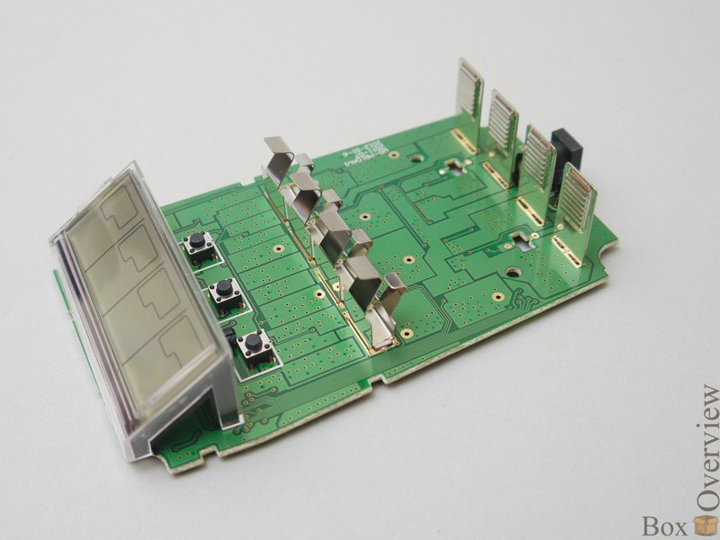
Верхняя сторона не очень интересная — одни полигоны, контакты, разъем, три кнопки и экран. Который можно без проблем снять с платы. А вот обратная сторона гораздо интереснее, там расположен микроконтроллер(синий), управляющий всеми функциями зарядки. Чуть ниже — балластные резисторы (красные) для режимов тестирования и восстановления (на них разряжаются аккумуляторы), желтые — шунты, точные резисторы на которых измеряется падение напряжения для контроля тока при заряде и разряде, голубой — операционный усилитель для термодатчиков.
Быстрый старт:
После включения без аккумуляторов на всех 4 дисплеях загорается надпись null.
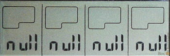
Если вставить заряженный аккумулятор — загорится надпись Full. Если не полностью заряженный — то покажет текущее напряжение, и режим по умолчанию — Charge.
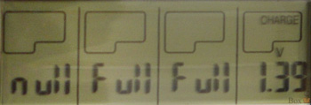
Если не нажимать никаких кнопок, то через 4 секунды покажет ток — по умолчанию 200mA, а через еще 4 — мигнет и перейдет в режим зарядки. Таким образом, можно просто всунуть туда аккумуляторы и уйти — режим зарядки включится автоматически.
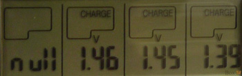
При работе кнопкой Display можно циклически переключать режимы ток-напряжение-заряд-время с начала процесса.
Если в течении 5 секунд нажать Current — можно выбрать ток заряда или разряда — 200-500-700-1000mA. Если в зарядку установлены 1 или 2 аккумуляторы в первый или последний отсеки — становится возможным выбрать ток 1500 или 1800mA.
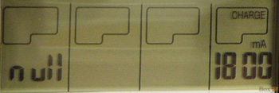
После выбора ничего делать не надо — через 10 секунд после нажатия последней кнопки включится режим с выбранным током.
Кнопкой Mode можно выбрать режим работы — Charge, Discharge, Test, Refresh. Для выбора надо подержать кнопку 2 секунды, после чего можно выбрать режим одиночными нажатиями. Первый режим — Заряд. Он установлен по умолчанию и просто заряжает аккумуляторы до полной емкости. Второй — Разряд, разряжает, а затем заряжает аккумулятор. Третий — заряжает аккумулятор, если он был не заряжен, потом разряжает, в процессе измеряя емкость, потом опять заряжает. Восстановление — четвертый режим, циклично разряжает и заряжает аккумуляторы, до тех пор, как емкость не перестанет изменяться.
Как я понимаю, смысл использования такой — если надо зарядить аккумуляторы быстро, то достаточно их вставить, и выбрать ток заряда. А если время терпит — например, если аккумуляторы пригодятся только утром, то лучше выбрать режим разрядки или тестирования — аккумуляторы разрядятся, а потом автоматически полностью зарядятся. Таким образом, и волки сыты, и овцы целы — аккумуляторы будет заряжены без вашего вмешательства, а сценарий разряд-заряд избавит от эффекта памяти.
Режим тестирования по времени длительнее, потому что для определения емкости надо сначало полностью зарядить аккумуляторы. Но зато после его окончания вы получите информацию о емкости аккумултятора, и в случае чего, вовремя сможете заменить резко умерший аккумулятор(это всяко лучше, чем узнать об этом во время работы).
О основных функциях я рассказал, все остальное — есть в руководстве.
Тестирование функции восстановления:
Очень «удачно» на распродаже в компьютерном магазине я наткнулся на новую упаковку аккумуляторов GP2700 за 200 рублей. Купив, вставив в зарядку я понял, что не зря они стоили так дешево:
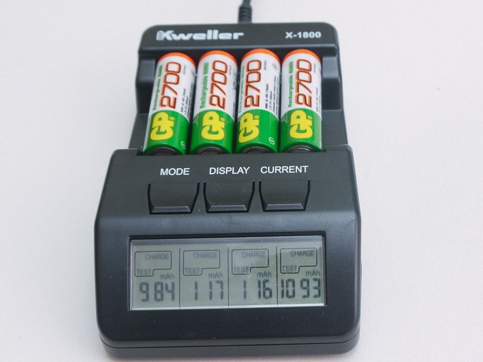
«Не гонялся бы ты поп, за дешевизной...» Вместо обозначенных 2700mAh аккумуляторы показали совсем иные цифры — два около 1000mAh, а два остальных — всего 100mAh. Может хранили неправильно, может они сами от саморазряда скончались. Терять мне было нечего, обратно распродажный товар не принимали, и я не особо надеясь включил режим Refresh, положил зарядку на полку и забыл про нее.
Через три дня, когда мне понадобилось зарядить комплект аккумуляторов из вспышки, я взял зарядку с полки, и увидел совсем другие цифры:
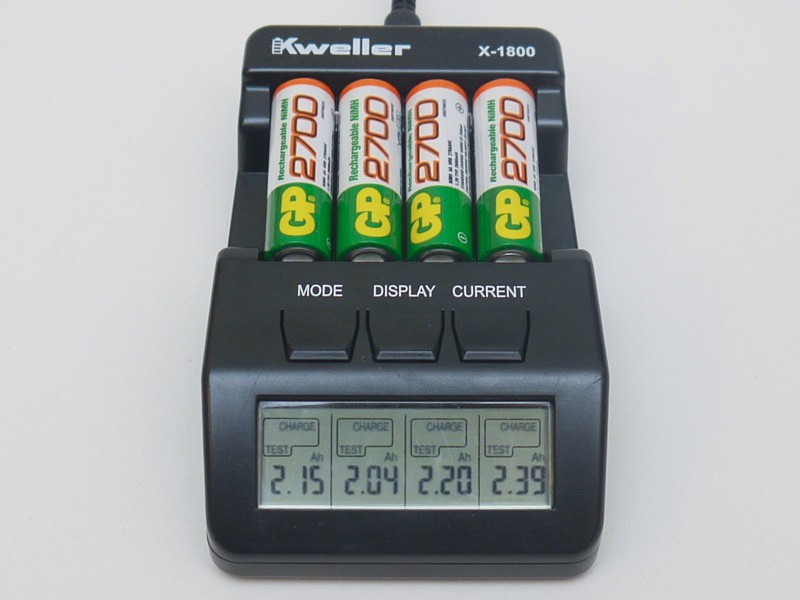
Вот так. Аккумулятор показавший результат 984mAh, превратился в 2150mAh, 117mAh — в 2040mAh, 116mAh — в 2200mAh, а 1093mAh в 2390mAh.
Конечно, не указанная производителем емкость, но я не поручусь, что измеренная емкость у совершенно новых аккумуляторов будет равна заявленной — все врут.
Главное — что функция восстановления работает отлично. Пойду пройдусь по знакомым фотографам, заберу у них кучу «дохлых» аккумуляторов. Наверняка часть из них окажется вполне рабочей :)
Стоимость:
В магазине la-crosse.ru это зарядное устройство стоит 1300 рублей.
Тематические ссылки:
Обзор на mysku.ru
Обзор на Hardware Portal
Обзор на fonarevka.ru
Вывод:
Удобное, хорошо собранное устройство для для заряда аккумуляторов. Думаю, цена устройства быстро окупится удобством работы и несколькими восстановлениями аккумуляторов, вместо покупки новых.